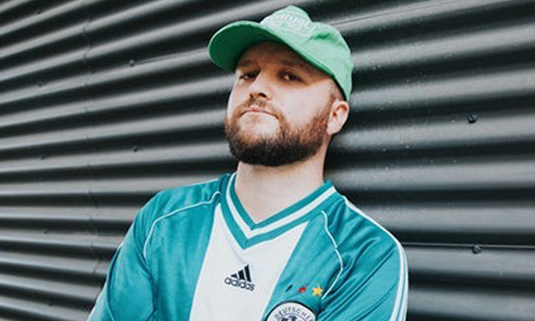
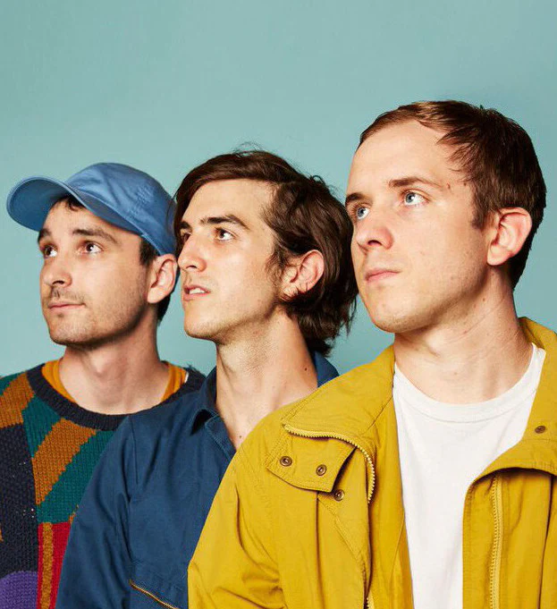

Artists
- Artists
Bleachers
Fronted by Jack Antonoff, Bleachers delivers a nostalgic yet innovative sound that blends indie rock with synth-heavy pop. Their music is a masterclass in emotional storytelling, often exploring themes of youth, longing, and resilience. Tracks like "I Wanna Get Better" and "Don’t Take the Money" showcase their knack for infectious hooks paired with deeply personal lyrics. Antonoff's production is unmistakably vibrant, layering anthemic choruses with subtle instrumental details that reward repeated listens. Bleachers also excels in evoking an '80s aesthetic, both sonically and visually, making their music feel timeless yet contemporary.Their albums are cohesive narratives, with Strange Desire and Gone Now feeling like chapters of a broader emotional journey. The band's ability to translate raw emotions into uplifting and cathartic moments resonates deeply with listeners. Live performances amplify this energy, as Antonoff's charisma and heartfelt engagement with the audience create an electrifying experience. Bleachers stands as a testament to Antonoff's prowess as a producer and performer, consistently pushing the boundaries of indie-pop.

Quinn XCII
Quinn XCII (pronounced "Quinn 92") has carved out a unique niche in the music world with his genre-blurring style. His music effortlessly melds pop, hip-hop, and reggae influences, resulting in a sound that's refreshingly laid-back yet emotionally impactful. Tracks like "Straightjacket" and "Flare Guns" exemplify his storytelling prowess, combining witty lyrics with melodies that stick in your head long after listening. Quinn XCII's voice, warm and distinct, serves as the perfect vehicle for his introspective yet relatable themes.Albums like The Story of Us and Change of Scenery II showcase his evolution as an artist, with the latter capturing a more introspective and sonically mature side of him. His collaborations with artists like Chelsea Cutler and Logic add layers of versatility to his discography, highlighting his ability to adapt his sound without losing authenticity. On stage, Quinn XCII is dynamic and personable, creating an intimate atmosphere despite his growing fanbase. His music feels like the soundtrack to everyday moments, offering comfort and connection.

half·alive
half·alive is a trio that combines eclectic influences to produce a sound that feels both experimental and accessible. Their music is an amalgamation of indie-pop, funk, and electronic elements, often featuring intricate arrangements and thought-provoking lyrics. Songs like "still feel." and "Runaway" are standout examples of their ability to pair groovy rhythms with existential musings. The band’s attention to detail is evident not only in their music but also in their visual storytelling, with choreographed music videos that elevate their artistry.Their debut album, Now, Not Yet, explores themes of identity, purpose, and self-reflection, offering listeners an immersive experience that feels both personal and universal. half·alive's sonic landscape is rich and textured, with each track unfolding like a narrative. Their performances are equally captivating, blending live music with theatrical elements that create a multi-sensory experience. The band's ability to balance innovation with accessibility makes them a standout act in the indie scene.

Comparative Strengths
Each of these artists shines in distinct ways, making them exceptional within their genres. Bleachers excels in creating larger-than-life anthems that feel deeply personal, while Quinn XCII’s approachable and genre-fluid style fosters a sense of intimacy. half·alive, on the other hand, pushes boundaries with their experimental approach, blending music and visuals into a cohesive artistic statement. Their shared strength lies in their authenticity, each crafting music that resonates on an emotional level.Thematic Overlaps
Interestingly, these artists often explore themes of self-discovery and emotional growth, albeit through different lenses. Bleachers leans into nostalgia and resilience, Quinn XCII navigates personal relationships and mental health, and half·alive delves into existential questions. Despite their varied sonic approaches, they all strike a balance between vulnerability and optimism, offering listeners a sense of hope and connection.Final Thoughts
Bleachers, Quinn XCII, and half·alive each bring something unique to the table, making them standout acts within their respective niches. Whether it's the anthemic quality of Bleachers, the chill yet heartfelt vibe of Quinn XCII, or the experimental artistry of half·alive, they all offer music that invites listeners to feel, think, and grow. Fans of modern indie and pop would find these artists not only engaging but also deeply rewarding to explore.For More info, check out this website
Return back to the top of the page here